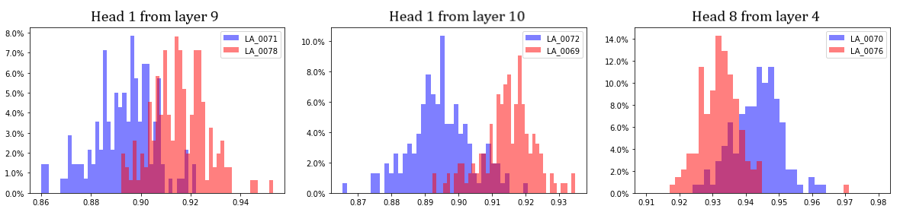
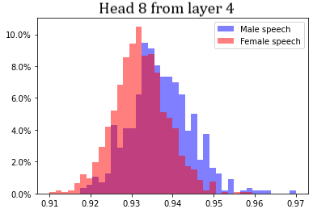

Our approach to this task is same as for the separation of individual models — we are looking for the heads that best separate distributions of Hm, sym0 for samples from two gfiven people. We once again use data from ASVSpoof 2019 dataset (only the bonafide speech), we use it — and not VoxCeleb1 — because it has much higher number of samples per speaker (around 150 on average) and this the estimation of distribution statistics is much more stable.
Once again, it turns out that for every pair of speakers there are several heads that separate them fairly good (SQ > 1), however thsi time there are np cases of very good separation (SQ > 3). Figure 1 below shows plots of distributions from best head for three speaker pairs. Speakers presented are:

Figure B.1. Left picture — both speaker are male; Center — both speakers are female; Right — both speakers are male. |
From plots it is clearly seen that heads can distinguish speakers equally well regardless of their gender. On the other hand, there is no head that can separate male speech in general (from all male speakers) from female speech in general anyhow good. Best separation (with SQ = 0.72) is achieved at head 8 from layer 4. Corresponding distributions are presented at Figure 2.
|

Figure B.2. Distributions of Hm, sym0 for speech from all male and all female speakers presented in dataset. |
Designed in Notepad and hosted by Github. (C) TopoHuBERT team (Eduard Tulchinskii et.al.), 2022.